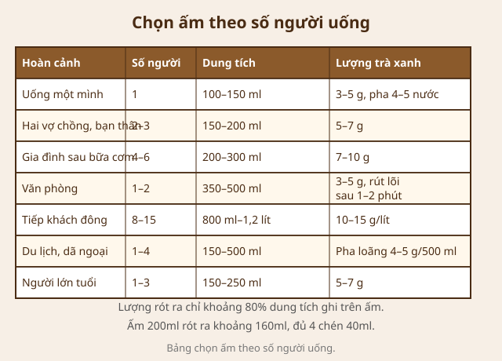

Ấm và chén trà: chọn ấm, giữ nhiệt, rửa và bảo quản
Tác giả: Ruler
Một ấm trà ngon có thể hỏng chỉ vì chiếc ấm cầm trên tay không hợp. Ấm quá to thì nước cuối lượt đậm gắt. Ấm giữ nhiệt kém thì trà xanh nguội trước khi kịp ra vị. Ấm đất dùng chung cho trà sen và trà đậm thì mùi hoa còn bám trong lòng ấm nhiều buổi sau. Bài này không bắt đầu từ danh sách các loại ấm, mà từ ba câu hỏi: buổi trà đó có mấy người uống, uống loại trà nào, và người pha có sẵn lòng rửa ấm sau mỗi lần pha hay không. Trả lời xong ba câu đó, việc chọn ấm chỉ còn là chuyện đo dung tích và xem chất liệu.
Câu "nhất thủy, nhì trà, tam pha, tứ ấm" nhắc một điều thực tế: ấm không cứu được trà dở thành trà ngon, nhưng ấm sai thì làm hỏng cả trà tốt.
Buổi sáng một mình: ấm nhỏ, rót nhanh, rửa ít
Buổi trà một mình là lúc ấm nhỏ phát huy hết tác dụng. Một chiếc ấm hoặc chén khải chừng 100–150 ml, pha với 3–5 g trà, vừa đủ một chén uống xong trong một lượt, không thừa nước để ngâm. Chén khải không có quai nên người mới dễ nóng tay: chỉ rót lưng chừng khoảng hai phần ba chén, kẹp vành đĩa bằng hai ngón, đè núm nắp bằng ngón trỏ, hé một khe nhỏ rồi rót. Vài buổi là quen. Nếu vẫn ngại nóng, chọn loại thành dày, viền loe, hoặc ấm sứ nhỏ 150 ml có quai.
Vì chỉ pha cho một người, lượng trà cũng ít theo. Quy tắc chung mà Thuận Trà nêu cho ấm nhỏ là chừng 3–4 g trà cho mỗi 100 ml nước. Với trà xanh Thái Nguyên, một bài khác của cùng nhà này ghi tỉ lệ khoảng một gam trà cho mỗi 25 ml nước, pha ở 80–90°C. Ấm 150 ml cần chừng 6 g theo cách tính thứ hai. Người mới chỉ cần nhớ một mốc: ấm nhỏ thì 5 g trà là điểm bắt đầu an toàn, rồi nếm và chỉnh.
Chén trà xanh hỏng thường hỏng vì chậm tay: bã nằm thêm một hai phút trong nước nóng là chén đã gắt hẳn — chát dịu thành đắng, màu nước xanh vàng sẫm lại. Ấm một người vì thế không cần to, chỉ cần rót nhanh và rót cạn từng lượt, để nước rời bã sớm và giữ được vị. Với ấm 180 ml, một lượt rót được 3–4 chén, mỗi chén 40–50 ml; hai ba người uống chung thì cỡ 160–200 ml là vừa, chưa cần ấm to hơn.
Bàn gia đình và bàn tiếp khách: chia đều mới là việc khó
Pha cho cả nhà sau bữa cơm, việc khó không phải là pha đủ nước mà là chia sao cho chén nào cũng đậm nhạt như nhau. Rót thẳng từ ấm vào từng chén thì các chén không đều: chén rót trước nhạt, chén rót sau đậm, vì nước trong ấm càng về sau càng đậm. Muốn đều, rót hết nước ra chén tống rồi mới chia ra các chén nhỏ. Chén tống nên to bằng ấm hoặc to hơn ấm một chút, làm bằng thủy tinh trong để nhìn được màu nước. Chén quân thường cỡ 40–60 ml, men trắng để nhìn rõ màu nước, rót chừng bảy phần chén để khách cầm không sóng sánh, và mời người lớn tuổi trước.
Ấm cho gia đình 4–6 người thường chừng 200–300 ml, pha 7–10 g trà, đủ 5–6 chén mỗi nước. Khi đông khách hơn, tới 8–15 người, có hai cách: dùng ấm tích 800 ml đến 1,2 lít, hoặc dùng hai ấm vừa luân phiên nhau. Ấm tích giữ nóng nhờ giỏ ủ bọc ngoài, nhưng giữ nóng lâu không có nghĩa là để bã ngâm lâu: hãm 5–7 phút rồi chắt hết nước ra phích hoặc ấm sạch khác. Cách hai ấm luân phiên cho khách có lựa chọn — một ấm trà xanh, một ấm trà hoa — và trà lúc nào cũng tươi vị. Đông khách không có nghĩa là phải sắm ấm thật to. Pha hai lượt bằng ấm vừa, nước đều hơn hẳn một ấm lớn ngâm cả nắm trà.

Hình minh họa tự vẽ — không phải ảnh chụp thật.
Mua ấm cho người lớn tuổi, hãy đổ đầy nước rồi nhấc lên thử: ấm gốm dày chứa đầy nước có thể nặng hơn một ký, cầm không vững thì rơi vỡ hoặc bỏng. Bỏ qua chén khải trước, vì loại này không có quai, tay run khó giữ. Thứ nên chọn là ấm sứ nhẹ, quai đủ rộng để luồn hai ba ngón tay, nắp có gờ giữ cho khỏi rơi khi nghiêng rót, chén men sáng nhìn rõ mức nước.
Ở văn phòng và khi đi xa: đừng để bã ngâm cả buổi
Bình pha ở văn phòng hay gặp một lỗi: pha từ sáng, uống dần tới chiều. Bình pha buổi sáng mà để tới chiều thì nước đã đổi vị — chát hơn, sẫm hơn, hương cũng nhạt đi. Cách sửa là dùng bình có lõi lọc nhấc ra được: cho 3–5 g trà vào lõi, châm nước 80–85°C, chờ một hai phút rồi nhấc lõi ra đặt lên đĩa. Đổ nước mới và cắm lõi lại cho lần sau — một lượng trà pha được 3–4 lần. Nước từ bình nóng lạnh thường 90–95°C, nóng hơn mức trà xanh cần — rót ra cốc, chờ một hai phút cho nguội bớt rồi hãy pha.
Mang trà đi xa thì gọn nhẹ là trên hết, nhưng gọn không có nghĩa là để bã ngâm cả ngày. Với bình giữ nhiệt, hãy chọn loại có lõi để rút bã ra khi cần; nếu bình không có lõi, hãy pha trước ở nhà, lọc sạch bã rồi hãy đổ vào, đồng thời pha nhạt hơn mọi khi — trà nằm trong bình giữ nhiệt càng lâu càng đậm. Nơi đến có chỗ đun nước thì một bộ nhỏ là đủ: ấm nhỏ hoặc chén khải, hai tới bốn chén, đựng trong túi vải chống sốc. Còn đi công tác thì trà túi lọc tiện nhất: nhấc túi ra sau 2–3 phút là xong.
Chọn chất liệu theo trà, không theo giá tiền
Chọn chất liệu thì hỏi trước một câu: nhà mình hay uống trà nào nhất. Trà xanh và trà ướp hoa hợp ấm sứ hoặc thủy tinh, vì hai loại này trung tính, không giữ mùi cũ, lại nhìn rõ màu nước. Hồng trà, ô long và trà đậm hợp ấm đất, vì lòng ấm xốp giữ nóng lâu, và hương trà thấm dần vào đất theo thời gian nên càng dùng càng tròn vị. Cùng một mẻ trà, pha bằng ấm đất với ấm sứ đã cho hai chén nước khác nhau — chất liệu không phải chuyện phụ.
Ấm đất có một quy tắc riêng: một ấm chỉ dùng cho một nhóm trà. Một ấm đất đã dùng mấy tháng để pha hồng trà mà đem pha trà xanh thì chén trà xanh sẽ ám mùi hồng trà. Người uống nhiều loại trà nên coi ấm đất là ấm thứ hai, mua sau ấm sứ. Ấm đầu tiên nên là ấm sứ trắng hoặc chén khải khoảng 150 ml, vì trung tính, dễ rửa, pha được nhiều loại trà và nhìn rõ màu nước.
Mời khách lần đầu uống trà, ấm thủy tinh là lựa chọn hay: búp trà nở dần trong nước, khách nhìn thấy cả quá trình, nên rất hợp để pha trà hoa. Thủy tinh tỏa nhiệt nhanh, nhưng với trà xanh đó lại là điểm hay: nước không bị "chín". Chỉ chọn loại borosilicate chịu nhiệt; ấm vừa lấy trong tủ lạnh thì đừng rót nước sôi vào, và ấm đang nóng thì đừng đặt lên mặt đá lạnh. Ấm inox và ấm sắt thì hợp để đun nước hơn là để hãm trà xanh, vì thân thường to, giữ nhiệt lâu, lại không nhìn được màu nước.
Nguồn gốc ấm đất là chuyện hay gây nhầm lẫn. Nhiều ấm gắn mác "tử sa" bán ở Việt Nam thực ra do xưởng Bát Tràng làm theo dáng tử sa, không phải đất Nghi Hưng. Bát Tràng là làng gốm cổ bên sông Hồng; theo trang Du lịch Việt Nam mà Thuận Trà dẫn lại, làng này có lịch sử hơn 700 năm, và nhà này nói rõ các bộ ấm tử sa của họ đều là đất Bát Tràng. Ấm đất Nghi Hưng thật giá cao hơn nhiều, lại khó tự mình kiểm chứng, nên người bán nói đúng nguồn gốc mới đáng tin.
Đi mua ấm: thử bằng tay, đừng chỉ nhìn
Ấm đẹp trên kệ chưa chắc đã rót tốt. Cách thử nhanh tại quầy chỉ cần vài phút với một ít nước sạch. Bắt đầu từ những chỗ không cần nước: nắp phải khít, không lắc lư — thử nghiêng ấm chừng 45 độ, nắp không được xê dịch; quai cầm chắc tay khi ấm đầy nước nóng, ngón tay không đụng vào thân ấm; soi đèn tìm vết nứt chân chim chỗ vòi và quai nối vào thân ấm — ấm đã nứt thì đổi ngay, đừng đun. Rồi mới rót thử: dòng nước phải liền mạch, không tạt sang hai bên; với ấm 170 ml, một lượt rót nên hết trong khoảng 8–12 giây, chậm hơn thì nước rót sau đậm hơn nước rót đầu; dựng ấm lên, vòi không nhỏ giọt chảy dài xuống thân. Lỗ lọc trong lòng ấm phải đủ dày — nhiều lỗ nhỏ, hoặc lưới mịn — để giữ búp trà vụn lại. Cuối cùng là ngửi: tráng nước sôi rồi ngửi thử, ấm có mùi lạ hoặc mùi sơn thì nên đổi ấm khác.
Về tiền, một bộ khởi đầu dùng tốt thường khoảng 300.000–500.000đ: ấm sứ trắng hoặc chén khải, hộp thiếc đựng trà, 4 chén sứ, chén tống thủy tinh và lọc inox. Đun nước thì dùng ấm sẵn có trong bếp; đo bằng nhiệt kế que, hoặc chờ nước sôi nguội 3–4 phút. Cùng một loại trà móc câu, ấm tử sa giá 5 triệu rót nước sôi thẳng vào thì cho chén kém hơn hẳn ấm sứ 150.000đ pha đúng 85°C — tiền bỏ ra không mua được chén ngon nếu nước sai nhiệt độ. Vì vậy hãy ưu tiên ấm đun chỉnh nhiệt và trà ngon, ấm đất đắt tiền mua sau cũng được. Cân tiểu ly 0,1 g và nhiệt kế là hai món nên mua thêm khi muốn pha đúng số.
Ấm mới về: đun trong nồi hay chỉ tráng nước sôi?
Ấm đất mới mua cần làm sạch trước lần pha đầu, vì trong lòng ấm còn bụi đất, vụn gốm từ lúc sản xuất và mùi đất nung. Hai nguồn mà bài này mở trực tiếp nói khác nhau về mức độ cần làm, nên bài ghi rõ cả hai để bạn tự chọn — và cả hai đều đồng ý ở điểm cốt lõi: rửa sạch bụi và vụn gốm, tráng nước sôi để hết mùi đất, tuyệt đối không dùng nước rửa chén hay chất tẩy có mùi.
Cách thứ nhất, theo Thuận Trà, là đun ấm trong nồi nước sạch. Trước hết, chải nhẹ vòi và lỗ lọc cho sạch vụn đất, rồi tráng ấm bằng nước ấm. Điểm quan trọng nhất của cách này là nước phải lạnh từ đầu và lửa phải nhỏ: cho ấm vào khi nước còn lạnh, đun từ từ, khi nước sôi thì hạ nhỏ lửa. Chọn nồi rộng rãi, lót khăn mềm dưới đáy cho ấm khỏi va chạm, đặt ấm và nắp riêng rồi đổ nước ngập ấm. Ấm gốm Bát Tràng giữ lửa liu riu khoảng 20–30 phút; ấm Nghi Hưng thì người chơi thường đun lâu hơn, chừng một giờ. Tắt bếp rồi để ấm nguội hẳn trong nồi mới vớt ra, rồi pha bỏ 1–2 ấm bằng đúng loại trà sẽ gắn với ấm này lâu dài. Với ấm sứ hay ấm gốm, một bài khác của Thuận Trà ghi thêm cách gọn hơn: chần ấm trong nồi nước sôi chừng 10 phút rồi để nguội dần trong nồi; ấm thủy tinh thì tráng nước nóng là đủ.
Cách thứ hai, theo Trần Ký Trà, cho rằng không cần luộc ấm. Rửa sạch trong ngoài bằng nước, chải nhẹ các góc khuất bằng bàn chải mềm, rồi dội nước sôi khắp thân ấm và rót đầy lòng ấm. Chờ 3–5 phút, đổ bỏ rồi tráng lại lần nữa bằng nước sạch. Toàn bộ chỉ mất 10–15 phút. Trần Ký Trà cho rằng luộc ấm dễ gây sốc nhiệt, nhất là với ấm thành mỏng. Về hai cách truyền miệng là nấu kèm đậu phụ hay mía, Trần Ký Trà viết rõ chúng không có cơ sở khoa học: đậu phụ có thể để lại màng protein khiến ấm ám mùi đậu, còn mía để lại lớp đường khiến mặt ấm mượt giả, lâu ngày bám bụi và dính tay. Bài này cũng nói rõ khai ấm chỉ là khâu vệ sinh đầu tiên, không làm thay đổi bản chất đất và không phải phép thử để phân biệt đất thật hay giả.
Nếu đun trong nồi, hãy đặt ấm vào nồi khi nước còn nguội và đun từ từ, đừng thả ấm vào nước đang sôi; kiểm tra ấm không nứt trước khi đun. Nếu tráng nước sôi, hãy làm đủ ba bước rửa, tráng, rửa lại, và pha bỏ ấm trà đầu tiên trước khi uống. Ấm mới làm sạch xong thì chưa biết nó hợp thời gian ngâm nào — thử là nhanh nhất. Pha 3 ấm liên tiếp, mỗi ấm 7 g trà với nước 85°C, chỉ đổi một thứ: ấm đầu ngâm 20 giây, ấm thứ hai 30 giây, ấm thứ ba 40 giây. Nếm cả ba, xem ấm này hợp thời gian nào, rồi ghi lại con số ưng miệng.
Giữ ấm sạch: việc nhỏ mỗi ngày quan trọng hơn vệ sinh sâu
Giữ ấm sạch không cần vệ sinh sâu thường xuyên — mỗi lần pha xong chỉ mất 1–2 phút, chia làm hai việc: việc làm ngay là đổ bã và tráng nước sôi cả trong lẫn ngoài; việc còn lại là lau khô mặt ngoài rồi đặt nắp hở cho khô hẳn. Đừng để bã qua đêm trong ấm, vì bã ẩm là chỗ dễ sinh mùi mốc.
Cuối tuần dành 5 phút: thông lỗ lọc bằng bàn chải lông mềm, lau vòi, xem miệng ấm đã đóng cao trà dày chưa. Riêng ấm đất thì tuyệt đối không dùng chất tẩy rửa hay nước rửa chén, vì đất xốp hút mùi — chỉ dùng nước sôi và baking soda. Cao trà đã dày thì làm sạch bằng hai lần ngâm, một lần chà. Lần ngâm đầu: nước ấm, chừng 15 phút, để lớp cao mềm ra. Lần ngâm sau: một thìa baking soda pha với nước sôi, rót vào ấm, ngâm 15–20 phút rồi mới chà nhẹ chỗ cao còn bám, dội nước sôi nhiều lần cho sạch hẳn baking soda, xong pha bỏ một ấm quen. Cách này dùng được cho ấm sứ và thủy tinh.
Vệt trắng ở miệng ấm hay thân ấm thường là do nước cứng — pha và tráng ấm bằng nước lọc là hết. Lỗ lọc tắc làm rót chậm thì lấy que tre nhỏ thông từng lỗ, sau đó tráng nước sôi mạnh qua vòi. Ấm nứt chân chim thì không đun trong nồi vì vết nứt lan rộng, và nếu nước rỉ ra khi pha thì đừng dùng tiếp. Còn ấm ám mùi mốc: cứu tối đa hai, ba lần thì thôi — mỗi lần đun lại trong nồi nước sạch chừng 20–30 phút như lúc khai ấm mới, rồi mở nắp hong nơi thoáng gió một ngày; hết ba lần mà mùi vẫn không hết thì đổi ấm khác để pha trà. Đốm mốc trắng hay xanh trong lòng ấm thì lấy bàn chải mềm nhúng nước baking soda chà nhẹ, đun sôi lại như trên, hong cho khô hẳn.
Trước khi cất lâu, ấm phải khô hẳn mới được cất: rửa sạch rồi hong cho khô hẳn — Thuận Trà ghi cần hong nửa ngày — rồi cất chỗ khô ráo, kê nắp hở cho thoáng khí. Cất ấm còn ướt bằng cách úp ngược lên khay kín là giữ nước đọng lại trong lòng ấm, để lâu rất dễ sinh mốc.
Những việc đừng làm, và chuyện an toàn của men gốm
Một ấm đất chỉ nên pha một nhóm trà: trà ướp hoa và trà đậm mà dùng chung một ấm thì hương hoa bám vào lòng ấm, rửa mấy cũng khó hết. Cũng đừng cho ấm đất vào máy rửa bát — chất tẩy và nhiệt cao làm lòng ấm ám mùi, thân ấm dễ va đập và sứt. Chênh nhiệt đột ngột cũng dễ làm ấm đất nứt: ấm vừa lấy từ chỗ lạnh thì đừng dội nước sôi vào, ấm đang nóng thì đừng đặt lên mặt đá lạnh. Đừng tẩy cặn bằng giấm hay chanh đặc: axit để lại mùi chua khó hết trong lòng ấm. Kem đánh răng hay nước tẩy có mùi thơm cũng vậy — đất mộc giữ mùi lạ rất lâu, rửa không hết.
Khi mua ấm, nhìn ba dấu hiệu này trước khi hỏi giá: ấm trang trí chứa chì phải có nhãn ghi rõ không dùng cho thực phẩm; tránh họa tiết sặc sỡ trong lòng ấm và miệng chén không rõ nguồn; ấm nào men đã bong tróc trong lòng thì đừng dùng tiếp. Men hay họa tiết của một số đồ gốm có thể chứa chì, đồ gốm nung không đúng quy trình thì chì có thể ngấm vào thức ăn, đồ uống — Cơ quan FDA của Hoa Kỳ đã lưu ý điều này, và rửa hay đun sôi cũng không làm giảm lượng chì trong men kém chất lượng. Vì vậy nên chọn ấm mua từ cơ sở có tên tuổi.
Bộ đồ nghề đầu tiên: năm món là đủ
Muốn pha trà ngon tại nhà, năm món là đủ: một ấm đun chỉnh nhiệt (hoặc dùng nhiệt kế rời), một ấm pha 120–200 ml, một chén tống, 3–4 chén quân cỡ 40–60 ml và một hộp đựng trà kín. Năm món đó đủ để nước ra đều vị, búp trà không bị ngâm nát. Ấm tử sa đắt hơn, lại hút mùi, nên để mua sau cũng được.
Khay trà để hứng nước tráng ấm chén cho bàn khỏi ướt: chọn khay tre, gỗ hoặc gốm, loại có ngăn thoát nước. Lọc trà bằng lưới inox mịn chặn vụn khi rót vào chén tống, nhất là với trà cánh nhỏ. Bàn trà điện, bếp than hay siêu đất thì để sau — chỉ nên mua khi đã uống trà đều đặn thành thói quen.
Ba lỗi mua sắm hay gặp nhất, xếp theo mức độ hại chén trà: bỏ qua ấm đun — đổ nước sôi 100°C thẳng vào trà xanh là cách nhanh nhất làm ra trà đắng; lấy một ấm tử sa pha đủ mọi loại trà — ấm đất vừa nhớ mùi vừa giữ nhiệt, nên trà xanh dễ chín, hương nhài lẫn sang hồng trà; và mua ấm quá to — lấy ấm 400–500 ml cho hai người thì phải ngâm lâu hoặc bỏ phí trà, trong khi mỗi người mỗi lượt chỉ cần chừng 50–60 ml.
Kết luận
Chọn ấm trà không cần bắt đầu từ ấm đắt nhất, mà từ ba câu hỏi: uống với mấy người, hay pha loại trà nào, và có sẵn lòng rửa ấm sau mỗi lần pha hay không. Một mình buổi sáng, chén khải hay ấm sứ nhỏ 100–150 ml là đủ; cả nhà sau bữa cơm, ấm 200–300 ml kèm chén tống; ở văn phòng, bình lõi lọc 350–500 ml. Ấm đất hợp nhất khi chỉ pha một dòng trà, vì hương trà thấm dần vào lòng ấm theo thời gian; còn trà xanh và trà ướp hoa hợp với ấm sứ hay ấm thủy tinh trung tính hơn. Với ấm mới, làm sạch trước lần pha đầu rồi pha bỏ ấm đầu; mỗi lần pha xong thì đổ bã, tráng nước sôi, để nắp hở cho khô.
Nguồn tham khảo
- Thuận Trà Thái Nguyên, "Ấm pha trà phổ biến ở Việt Nam: chọn ấm theo hoàn cảnh dùng" — bảy kiểu ấm; dung tích 100–150 ml (1 người), 200–300 ml (4–6 người), 350–500 ml (bình lõi lọc), 800 ml–1,2 lít (ấm tích); lượng trà 3–4 g/100 ml (ấm nhỏ), 10–15 g/lít (ấm lớn); lượng rót ra khoảng 80% dung tích ghi; lưu ý FDA về chì trong men gốm; ấm tử sa mới rửa bằng nước nóng, có thể đun sôi với nước và vài gram trà (truy cập 24/11/2026): https://thuantrathainguyen.com/blogs/news/kham-pha-nhung-am-pha-tra-dang-pho-bien-thinh-hanh-tai-viet-nam
- Thuận Trà Thái Nguyên, "Cách vệ sinh ấm tử sa: khai ấm mới, rửa ấm cũ, xử lý mốc" — khai ấm đun nồi nước sạch 20–30 phút (Bát Tràng), khoảng 1 giờ (Nghi Hưng); pha bỏ 1–2 ấm trà; lịch vệ sinh sau mỗi lần pha, cuối tuần, khi cao trà dày, khi mốc; baking soda một thìa, ngâm 15–20 phút; không xà phòng, không máy rửa bát, không giấm/chanh (truy cập 24/11/2026): https://thuantrathainguyen.com/blogs/news/hoc-ngay-cach-ve-sinh-am-tu-sa-de-am-luon-nhu-moi
- Trần Ký Trà, "Khai Ấm Tử Sa: Có Bắt Buộc Và Cách Làm Đúng" — không cần luộc ấm; rửa nước sạch, tráng nước sôi trong ngoài, để 3–5 phút, rửa lại; toàn bộ 10–15 phút; không dùng đậu phụ, mía, giấm, muối, nước rửa chén; không luộc vì rủi ro sốc nhiệt; khai ấm không làm thay đổi bản chất đất (truy cập 24/11/2026): https://trankytra.vn/khai-am-tu-sa-co-bat-buoc-va-cach-lam-dung/
- Thuận Trà Thái Nguyên, "Chọn ấm pha trà thế nào cho hợp trà Thái Nguyên?" — tỉ lệ khoảng 1 g trà cho 25 ml nước, nước 80–90°C với trà xanh Thái Nguyên; 100–150 ml cho 1 người, 160–200 ml cho 2–3 người, 250–350 ml cho 4–6 người; ấm 180 ml rót vừa 3–4 chén 40–50 ml; ấm tử sa pha trà xanh nên để nước 80–85°C, rót hết trong 20–30 giây mỗi lượt; chần ấm mới trong nồi nước sôi khoảng 10 phút; pha bỏ 1–2 ấm; pha thử 3 ấm với 7 g trà, nước 85°C, ngâm 20, 30 và 40 giây (truy cập 24/11/2026): https://thuantrathainguyen.com/blogs/news/huong-dan-chon-am-pha-tra-phu-hop-cho-tra-kho-thai-nguyen
- Thuận Trà Thái Nguyên, "Dụng cụ pha trà: cần những gì, chọn ấm nào hợp trà nào" — bộ cơ bản 5 món: ấm pha 120–200 ml, chén tống, 3–4 chén quân nhỏ 40–60 ml, ấm đun chỉnh nhiệt, hộp đựng trà kín; chén tống dung tích bằng hoặc lớn hơn ấm; bộ khởi đầu khoảng 300.000–500.000đ; ấm 150 ml nên rót hết trong 5–8 giây; ấm tử sa mới tráng nước sôi, pha thử 1–2 ấm trà rẻ rồi đổ đi, không cần đun sôi với mía, đậu phụ; vệ sinh cặn trà bằng nước ấm với 1 thìa baking soda 15–20 phút (truy cập 24/11/2026): https://thuantrathainguyen.com/blogs/news/dung-cu-tra-va-tat-tan-tat-kien-thuc-ban-can-biet